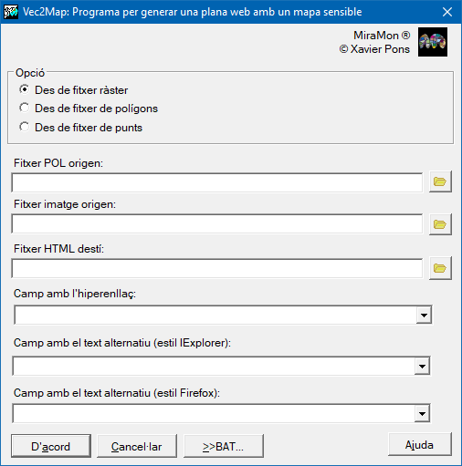

-
 Vec2Map: Crear un mapa HTML
Vec2Map: Crear un mapa HTML
Vec2Map: Crear un mapa HTML| Presentació i opcions | Caixa de diàleg de l'aplicació |
| Sintaxi |
Aquesta aplicació genera una plana de web amb un mapa sensible a partir d'un fitxer VEC de polígons, POL o PNT i d'una imatge ràster en format GIF o JPG. Si es treballa amb un fitxer POL o PNT es pot definir les propietats que tindran les àrees sensibles del mapa a partir de la informació de que es disposa a les metadades.
L'opció 1, des de fitxer ràster, té com a objectiu aprofitar les funcions de digitalització del MiraMon per a definir les regions actives dins d'una imatge inclosa en una pàgina HTML. Primerament, cal disposar de la imatge ràster GIF o JPG en la que es volen definir regions actives. Aquesta imatge pot ser una captura de pantalla sobre el MiraMon d'un mapa en petit. Per obtenir-la, cal visualitzar el mapa amb el MiraMon, definir la mida desitjada a partir del nivell de zoom i la mida de la finestra de l'aplicació, capturar la pantalla del MiraMon amb les tecles Alt+Impr.Pant. i enganxar-la en un programa de tractament d'imatges com el Corel Photopaint o l'Adobe Photoshop. Alternativament, es pot generar la imatge des del mòdul d'impressió del MiraMon imprimint directament sobre un JPEG. Per a imatges temàtiques es recomana guardar-la en format GIF i per a imatges continues en format JPG. També caldrà guardar una versió en format BMP o JPEG per a poder-la obrir en el MiraMon. Cal anotar el nombre de files i columnes de la imatge ràster.
El fitxer imprès en el MiraMon ha de ser obert amb l'opció "Obrir ràster" i digitalitzar les àrees actives desitjades en un fitxer VEC de polígons amb atributs string. Com atribut de cada àrea activa cal indicar el text de l'enllaç HTML separat per una coma del descriptor de l'enllaç. Aquest descriptor serà visible en alguns navegadors en passar amb el punter de ratolí sobre l'àrea activa.
Un cop finalitzat el fitxer VEC cal fer servir aquesta aplicació per a generar la pàgina web. S'edita el full HTML amb el programa de generació de codi HTML que s'usi habitualment i s'hi afegeix la resta de continguts desitjats.
L'opció 2, des de fitxer de polígons, permet treballar amb un vector estructurat de polígons .pol, directament en coordenades terreny (no cal que el fitxer sigui digitalitzat sobre la imatge impresa en coordenades píxel, com en el cas de l'opció 1). En aquest cas, cal disposar d'un fitxer JPEG amb un nombre de files i columnes prou baix per ser mostrat en l'HTML el qual ha d'estar georeferenciat. L'aplicació d'impressió del MiraMon produeix fitxers JPEG georeferenciats de baixa resolució si s'indica un nombre de files i columnes petit. Cal notar que es pot superposar àrees sensibles. Per fer-ho primer es generen les àrees sensibles majors i posteriorment les menors en fitxers de sortida diferents.
L'opció 3, des de fitxer de punts permet generar un mapa HTML sensible des d'un vector estructurat de punts .PNT, les àrees sensibles seran en forma de rectangle, d'alçada i amplada desitjada passant aquests valors als paràmetres d'execució Alçada i Amplada. En aquest cas, com en l'opció 2, és possible treballar amb un fitxer PNT directament en coordenades terreny si el fitxer JPEG és de baixa resolució georeferenciat. El paràmetre Orientació estableix on es dibuixen aquests rectangles respecte de cada punt.

 |
| Caixa de diàleg del Vec2Map |